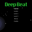
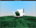

Christopher Williams
Software Developer
Table of Contents
Experience
Photon7 as a Visual Proudction Engineer
January 2024
- Produced visual effects for Jungle Experience party in Ko Pha-ngan, Thailand.
- Prepared, transported, and installed laser and video projector hardware.
- Calibrated and VJed six lasers with Pangolin software.
May 2020 - November 2022
- Designed, developed, and deployed features related to sharing and counter-abuse.
- Conducted weekly interviews for prospective SWE candidates.
April 2019 - March 2020
- Shipped RealityKit with automated daily API testing from Swift application.
- Designed and ran testing for SwiftStrike: an AR application shown at WWDC 2019.
- Focused on animation and networking automated API testing development.
July 2016 - March 2019
- Developed image metadata parser and network storage for automated consumption.
- Identified regressions through UI and API pre-submission and weekly testing.
- Designed and ran feature testing for dark mode introduced in macOS Mojave.
Treasure as a Full Stack Developer
October 2015 - June 2016

- Developed an ecommerce iOS app with Swift & web crawler with Ruby.
Apple as an Quality Engineer Intern for IMG
June - September 2015
- Automated video playback dropped frame analysis testing with Python and Obj-C.
Salesforce (Tempo AI) as a Developer
Feburary 2014 - May 2015
- Developed an Android application in a team of 8 software engineers.
- Tempo AI was acquired by Salesforce in May 2015.
November 2012 - Feburary 2014
- Developed desktop software with Adobe Flex UI and PostgreSQL databases.
Projects
October 2017
- Multi-platform app to keep track of score for two players in card game "Gin"
January - June 2016
- Platformer video game written in Swift for Apple TV
- Cal Poly Senior Project
January 2016
- Top-down goat chucking video game written with libgdx
- Created for GlobalGameJam hack-a-thon event
April - June 2015
- Real-time interactive 3D video game with an overworld and several minigames
- Utilized libraries for audio & video playback and text on-screen

March 2015
- Rhythmic web rail shooter game written in JavaScript utilizing CreateJS

January - March 2015

- Interactive 3D scene of a bunny shrine written in C++ utilizing OpenGL
January 2015
- Infinite maze runner game written in C++ utilizing SFML
- Created for GlobalGameJam hack-a-thon event
October 2014
- Android application utilizing Chromecast API and JSON data transfer
- Created for Cal Hacks hack-a-thon event
Education
September 2012 - June 2016
- Achieved Computer Science BS with a GPA of 3.2.
- Dean's List : Fall 2012, Spring 2013, Fall 2015.
- Focused on Real-Time 3D Graphics, User Design, Security, HCI, OS, and Networks.
QR Code
 Attack Vector
Attack Vector